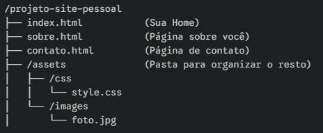

Aula - 10, Github em vários Pcs
Requisitos:
Para trabalhar no seu projeto em outro dispositivo, como requisito você terá que instalar: Github Desktop, Visual Studio Code, Navegador & Git.
Como trabalhar em outro dispositivo:
Github Desktop > File > Options > Accounts > Github.com Sign in.
Neste momento o Github estará funcionando após seu login, entretanto o Git não estará, portanto siga os passos abaixo.
File > Options > Git > Clique em salvar.
Clique no repositório desejado > Clonar > Crie uma pasta > Clonar. Pronto, você já tem seu projeto para trabalhar em outro dispositivo!
Como remover sem deixar rastros
1 - Repositório > Remove > Opção lixeira > Remove.
2 - File > Options > Sign Out > Git > Apague os campos da sua conta.
Github Pages
Como hospedar seus sites com Github Pages
Primeiro entre no github e no repositório que você deseja transformar em site.
Settings > Pages > Mude de "None" para "Main" em brunch.
Verifique se a pasta que você quer alocar no Github pages está organizada como na imagem abaixo.

Aula 02 - Colocando uma imagem de fundo no seu site
Na imagem abaixo você verá 3 quadrados que indicam 3 comandos
O quadrado 1:
background-color: firebrick;
O quadrado 2:
background-image: linear-gradient(to bottom, green, blue);
O quadrado 3:
background-image: url(/assets/images/
print.png);
Inclusive no 3, você pode usar como planos de fundo em qualquer site.
Comandos para personalizar
background-size: 100px 100px; #Tamanho do fundo
background-repeat: no-repeat; #A imagem repete?
importante:
Para uma abordagem exata do posicionamento do seu site use ao invés de height: 100px; use height: 100vh; 'vh' significa viewport, é aonde a sua página estará ancorada no redimensionamento da sua página.
No posicionamento do background o comando é: background-position: center bottom;, primeiro vem a coluna: left, center, right, e em seguida o lugar, top, center, bottom.
dimensionamento
existem alguns comandos para dimensionar a imagem melhor no fundo, dentre alguns está, background-size: 100%;
background-size: 100% 100% - estica a imagem para caber independente do dispositivo, pode ficar esticada
background-size: contain; - mostra 100% a imagem exibida
background-size: cover; - ocupa 100% da viewport, sem esticar, perfeito
shorthands
O uso de shorthands são linhas de códigos pequenas ao invés de grandes, preservando espaço no workspace.
color > image > position > repeat > size > attachment
Por algum motivo o size não funciona no HTML5 em shorthands, por isso use-o separado.
Alinhamento
na imagem abaixo você verá como funciona um alinhamento de um conteúdo dentro de um container, sem o uso de margin.
Os comandos utilizados foram:
#container {
position: relative;
background-image: url(/assets/images
/target001.png);
height: 50vh;
background-size: 100% 100%;
background-color: purple;
}
#conteudo {
position: absolute;
background-image: url(/assets/images
/target001.png);
background-size: 100% 100%;
background-color: yellow;
height: 200px;
width: 400px;
left: 50%;
top: 50%;
transform: translate(-50%, -50%);
Projeto
O príncipal projeto do módulo 3 começa aqui!
Tabelas
Pós projeto, seguiremos com as tabelas
Uso de grandes Tabelas
| Estado |
População |
th |
| São Paulo |
49.190.349 |
td |
| Minas Gerais |
22.313.195 |
td |
| Rio de Janeiro |
19.314.644 |
td |
| Bahia |
9.124.778 |
td |
| Total de habitantes |
99.942.966
|
td |
o captionpode ser usado para descrever as legendas de uma tabela.
para fazer o efeito zebrado use o comando tbody > tr:nth-child(2n)
Anatomia das tabelas grandes
THEAD
TR,TD,TH
TBODY
TR,TD,TH
TFOOT
TR,TD,TH
tr (Table Row): Representa uma linha horizontal completa dentro da tabela. Você usa uma
para cada nova linha que deseja criar.
th
(Table Header): Uma célula de cabeçalho. O texto geralmente aparece em negrito e centralizado por padrão. É usada dentro do thead (ou no início de uma linha) para indicar o título daquela coluna/linha.
td(Table Data): Uma célula de dado comum. É onde você insere a informação propriamente dita. Fica sempre dentro de uma tr.
Efeito seguimento e SEO
table {
position: relative;
}
thead > tr >th {
position: sticky;
top: -1px;
background-color: grey
}
Scope indica onde e em que direção o mesmo faz sentido naquela posição, indica uma melhor leitura do Google para um bom SEO.
scope="col" = informações relacionadas na mesma coluna.
scope="row" = informações relacionadas na mesma linha.
rowspan e colspansão comandos que mesclam tabelas.
Colgroup & Rowgroup
| Estado |
População |
th |
| São Paulo |
49.190.349 |
td |
| Minas Gerais |
22.313.195 |
td |
| Rio de Janeiro |
19.314.644 |
td |
| Bahia |
9.124.778 |
td |
| Total de habitantes |
99.942.966
|
td |
As cores foram atribuidas de maneira individual para cada coluna, por exemplo:
foram atribuidos 3 scope="col" para cada th, em seguida usamos < colgroup > com vários outros < col >dentro com classes como:
cest, cpop e cth. Em seguida, atribuimos as cores e pronto, mudamos toda a cor de uma coluna, sem precisar colocar um background-colorpara cada um. a mesma coisa é com o rowgroup.
Tabelas responsivas
| Produto |
Jan |
Fev |
Mar |
Abr |
Mai |
Jun |
Jul |
Ago |
Set |
Out |
Nov |
Dez |
| Nike |
450 |
320 |
510 |
290 |
600 |
430 |
380 |
550 |
410 |
620 |
700 |
850 |
| Apple |
980 | 850 | 920 | 740 | 810 | 890 |
950 | 1100 | 1250 | 1300 | 1450 | 1600 |
| Sony |
300 | 280 | 350 | 410 | 390 | 420 |
450 | 480 | 520 | 600 | 750 | 900 |
| Toyota |
150 | 140 | 165 | 180 | 175 | 190 |
210 | 205 | 220 | 250 | 280 | 310 |
| Samsung |
720 | 680 | 750 | 810 | 790 | 840 |
880 | 910 | 950 | 1020 | 1150 | 1280 |
| Microsoft |
880 | 910 | 850 | 890 | 930 | 970 |
1010 | 1050 | 1100 | 1150 | 1220 | 1300 |
| Coca-Cola |
550 | 520 | 580 | 610 | 650 | 700 |
720 | 750 | 710 | 680 | 850 | 950 |
Envelopamos a tabela com uma div e em seguida atribuimos um id, usamos esse id no css com o código overflow: auto; para criar uma barra de rolagem responsiva.
|